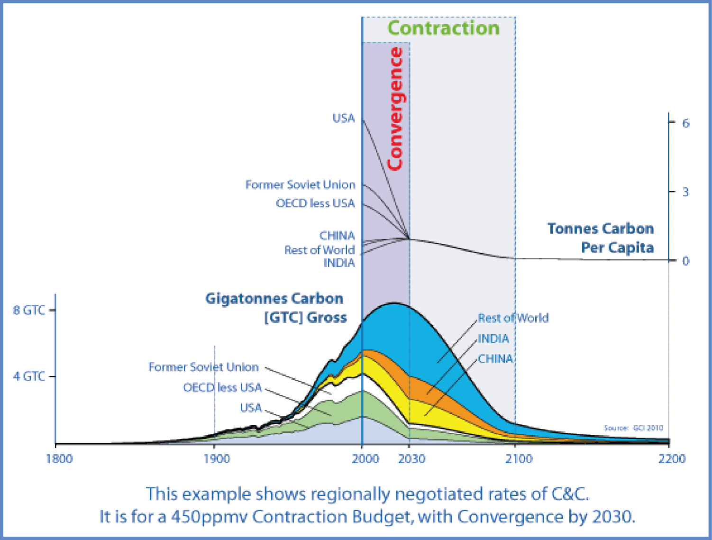
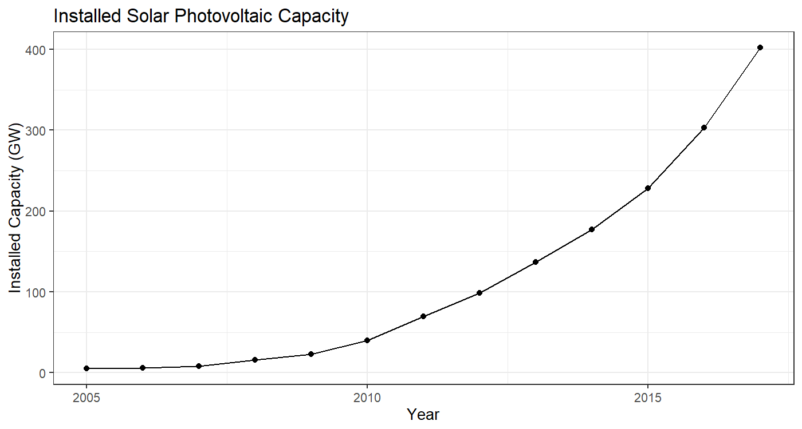
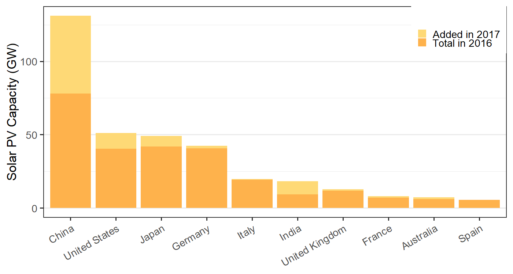
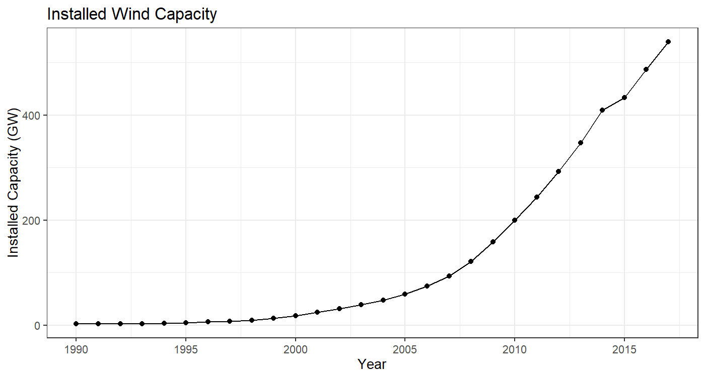
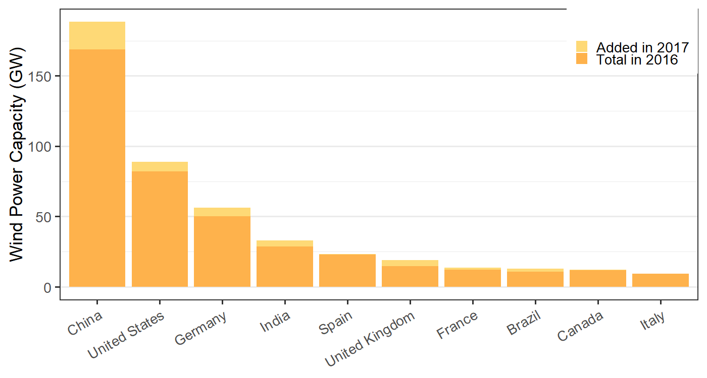
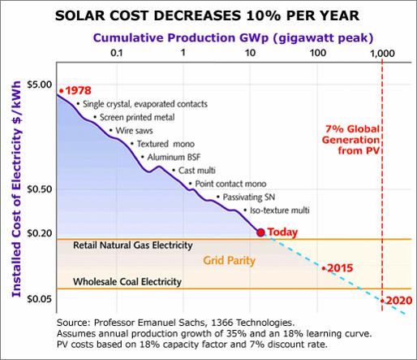
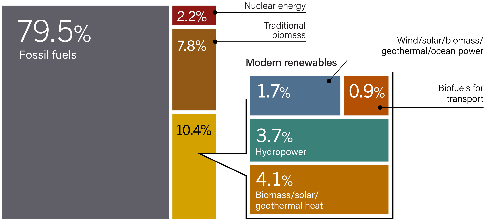
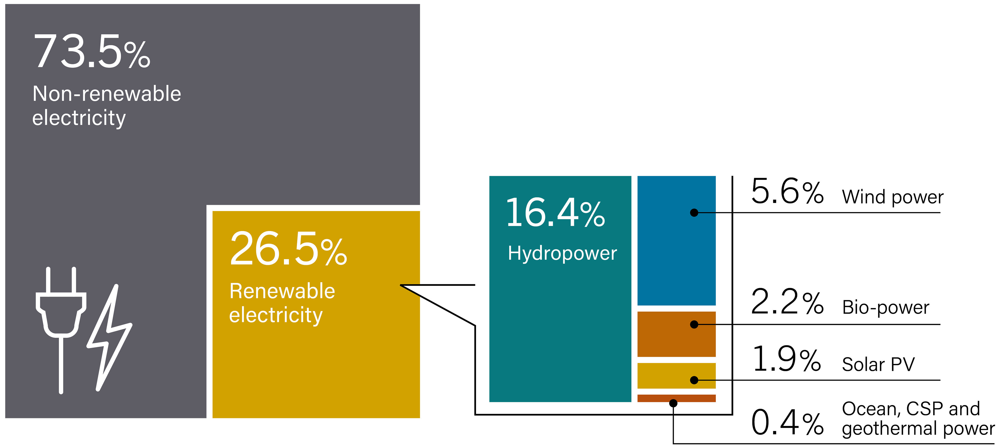
GDP grows at 0.43% + 1.88% = 2.31%
\(\displaystyle \begin{aligned} GDP(2050) &= GDP(2017) \times \exp(0.0231 \times (2050 - 2017))\\ &= \$2.81~\text{trillion} \times \exp(0.0231 \times 33)\\ &= \$6.02~{\text{trillion}} \end{aligned}\)
Implied growth rate of \(F\):
\(\displaystyle \begin{aligned} r_F &= \ln(F(2050) / F(2017)) / 33~\text{years} \\ &= \ln(435 / 1460) / 33 \\ &= -3.67\%. \end{aligned}\)
\(r_F = r_{Pg} + r_{ef} = r_G + r_{ef}\)
\(\displaystyle \begin{aligned} r_{ef} &= r_F - r_G \\ &= -3.67\% - 2.31\%\\ &= -5.98\% \end{aligned}\)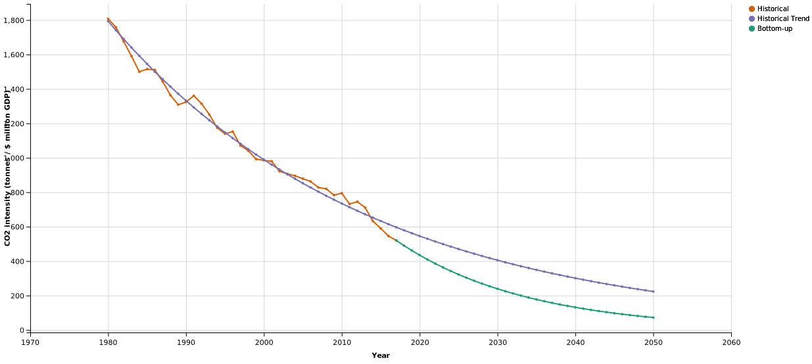
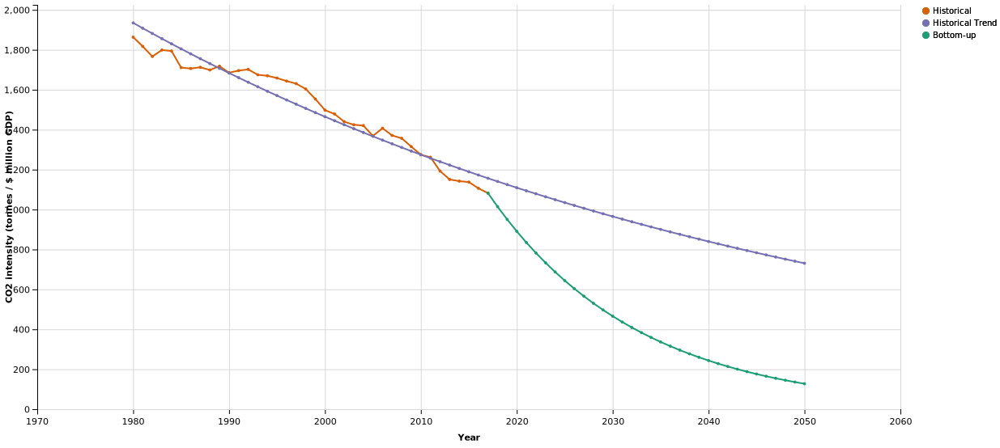
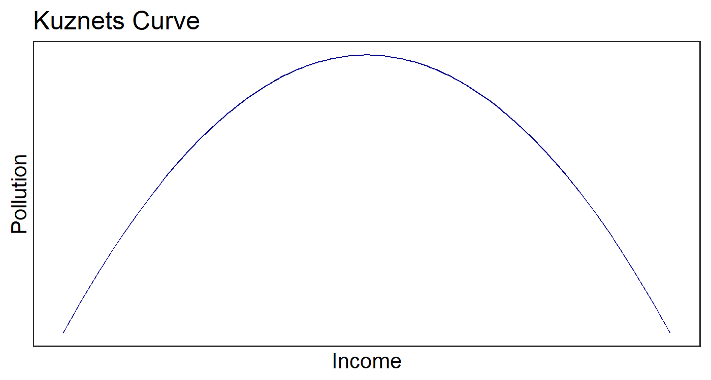